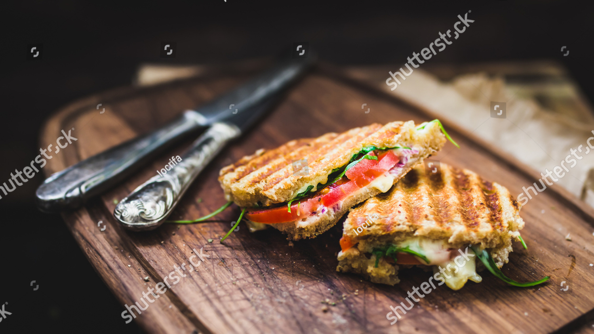
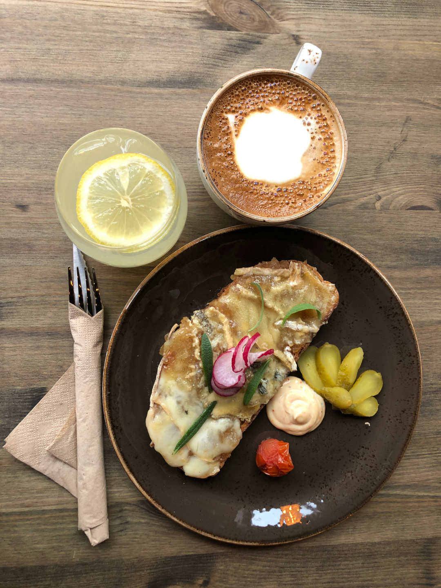
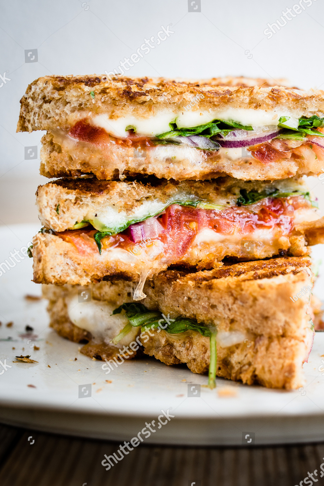

Braud toastbar ligger på Løkka, mellom Olaf Ryes plass og Birkelunden.


I konseptet har vi blant annet hentet inspirasjon fra Københavns mange toastbarer. Vi er lidenskapelig opptatte av å finne og utvikle toastens mange muligheter, alt fra en åpen avokadotoast med posjert egg til «ostete» toaster med comte, cheddar og buoncotto.

Til våre toaster serverer blant annet egenprodusert lemonade, øl og utvalgte viner, og selvfølgelig kaffe i alle varianter. I lokalet har lokale billedkunstnere dekorert veggene. Et sted for opplevelse og formidling av lokal kunst og kultur.